I/ Déroulé
Etape 1 : Nous avons installer sur chaque poste differents systemes d'exploitation avec une cle bootable donne par l'iut
Etape 2 : Nous avons reussi a installer windows server en recuperant l'image iso du site intranet et booter la cle grace a un logiciel " rufus"
Etape 3 : Nous avons connecter les 4 postes sur un switch grace aux cable ... et nous avons connecter le switch a un port du routeur ... et le routeur a ete connecter au switch de la salle
Etape 4 : Nous nous somme connecter au switch avec putty sur le switch et nous avons effectuées des commandes.
Création de vlan :
Enable
conf t
-----------
vlan 100
name technique
Exit
--------------
Vlan 200
Name RH
Exit
------------------
Vlan 300
Name finance
Exit
Attribution des interfaces du switch a un vlan :
Le poste 1 et le poste 2 sont connectés au switch sur Gi1/0/0 et Gi1/0/1
Nous allons attribuer l’interface Gi1/0/01 au vlan 100 (nommer technique) :
Int Gi1/0/0
Switchport mode access
Switchport access vlan 100
Exit
Nous voulons attribuer l’interface Gi1/0/1 au vlan 200 (nommer RH) :
Int Gi1/0/1
Switchport mode access
Switchport access vlan 200
Exit
Lien trunk :
Nous sommes maintenant dans deux vlan différents donc ne peuvent pas communiquer entre eux.
Pour permettre cela nous devons d’abord crée une liaison TRUNK entre le switch et le
routeur (le lien trunk c’est le lien physique qui permet de transiter les vlan).
Nous avons dit au début que nous avons un cable connecté
entre le switch et le routeur c’est ce cable qui va nous servir comme lien
physique et donc liaison trunk.
Disont ce cable est connecter sur le port G1/0/23 du switch :
Int G1/0/23
Switchport mode trunk
Swicthport trunk allowed vlan 100,200,300
Exit
Maintenant il faut une configuration sur le routeur :
Enable
Conf t
Int G0/0/0.100 (nous allons créer 3 sous-interfaces car on a 3 vlan)
Ip address 192.168.1.1 255.255.255.0 (nous avons donner une ip a cette sous
interface qui sera la passerelle de notre reseau)
Encapsulation dot1q 100 (le nom du premier vlan)
No shutdown (pour activer cette sous-interface)
Exit
------
Int G0/0/0.200
Ip address 192.168.2.1 255.255.255.0
No sh
Encapsulation dot1q 200
Exit
Active Directory
Définition
Active Directory (AD) est une base de données et un ensemble de services qui permettent de mettre en lien les utilisateurs avec les ressources réseau dont ils ont besoin pour mener à bien leurs missions. Nous allons s’en servir dans un premier temps pour permettre une authentification des utilisateurs depuis certains postes ayant comme DNS l’adresse IP du Serveur Windows.
Authentification des utilisateurs
Windows Serveur
Voilà notre gestionnaire de serveur qui nous permettra d’installer quelques fonctionnalités utiles pour répondre a nos besoins
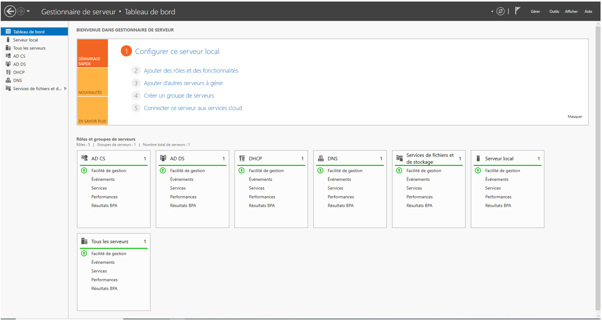Nous devons installer une fonctionnalité AD DS ou Active Directory Domain Server, c’est avec cette fonctionnalité nous pourrons avoir un Contrôleur de domaine :
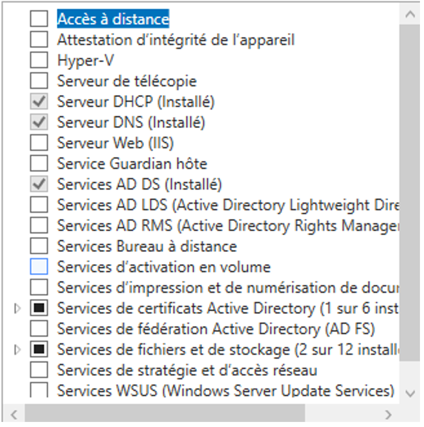Nous devons promouvoir notre serveur a un contrôleur de domaine :
Nous allons utiliser des screenshots extraits d’internet pour quelques étapes
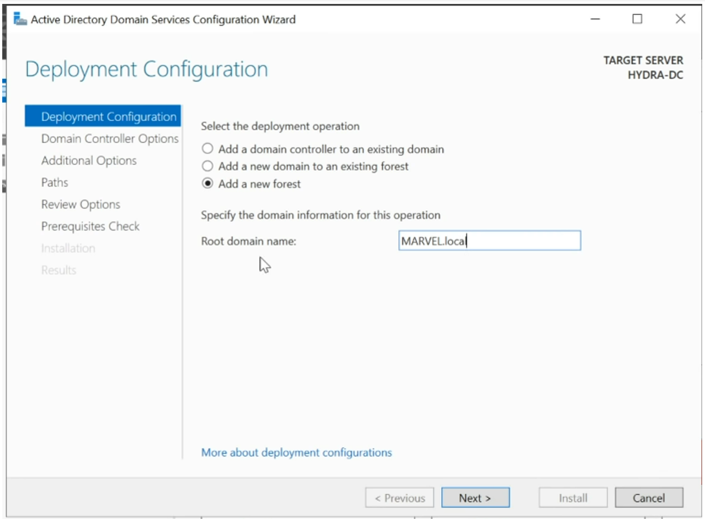Installation d’un certificat Active Directory
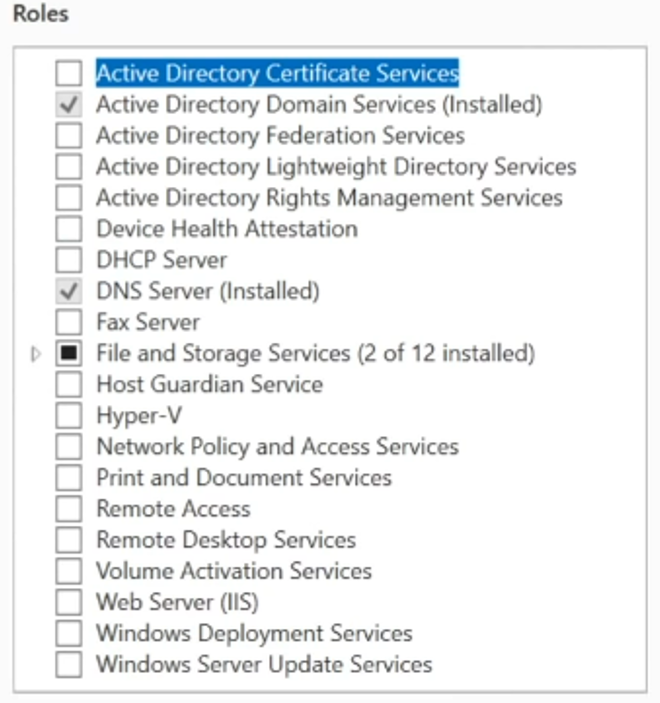Création des utilisateurs :
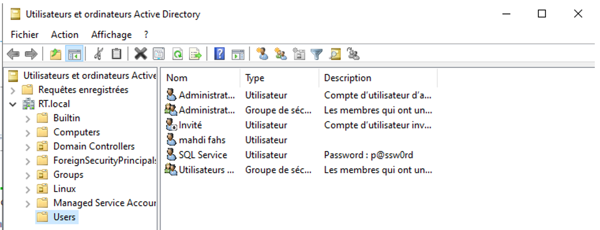Dans un fichier Users nous avons crée différents utilisateurs. Pour le faire il nous suffit de faire un clique droit puis nouveau
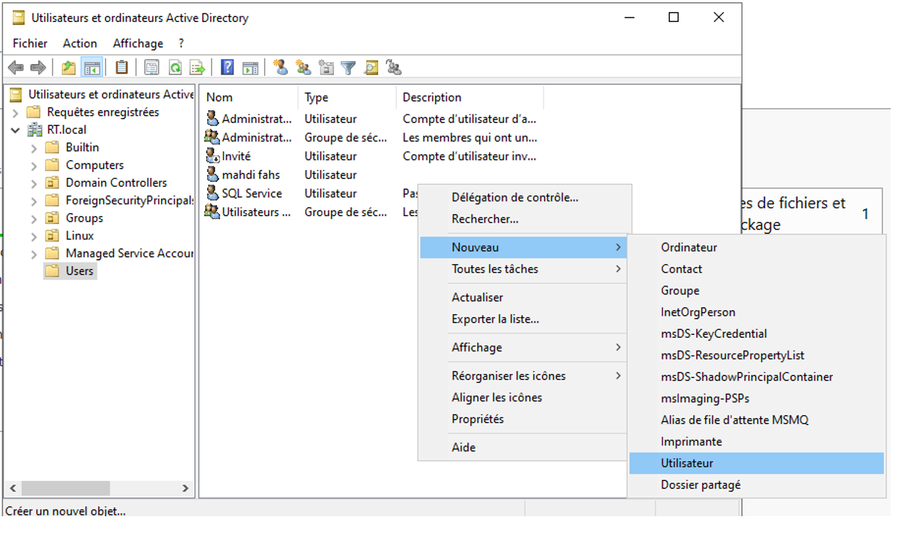Nous devons maintenant ajouter des informations comme le nom d’utilisateur le prénom, le nom d’ouverture de session . Ce sont ces informations que nous allons utiliser pour pouvoir se connecter sur la machine cliente
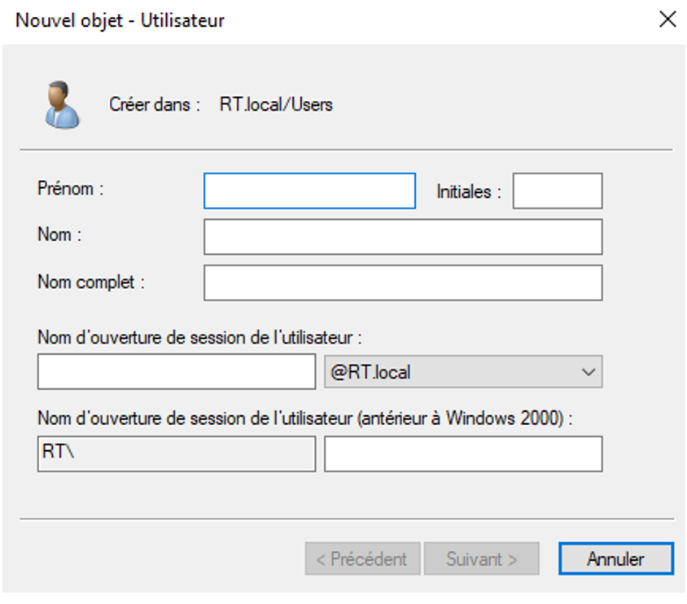Un mot de passe est aussi nécessaire
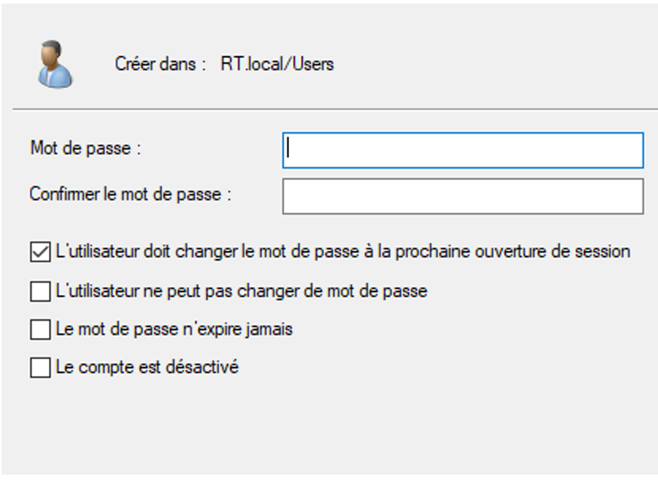Client Windows
Afin que notre client Windows 10 fait partie de Active Directory il faut suivre quelques étapes.
D’abord il foudra ajouter un DNS sur la machine cliente qui est donc l’adresse IP de la machine Windows Server
Pour le faire nous nous sommes servis du panneau de configuration
Ainsi:
Configuration > Réseau et Internet > Centre Réseau et Partage > notre carte Réseau
Finalement, nous devons aller dans parametres.
setting > Account > Access work or school
Puis, nous devions cliquer sur le bouton "join this divise to Azure Active Directory"
Enfin, nous devions faire entre nos informations comme le nom du domaine qui est a la base :
RT.local puis un nom d’utilisateur et mot de passe (le compte crée sur notre Active Directory)
Serveur Téléphonique
Pour le serveur téléphnoique, nous avons créé et paramétré sur le PC serveur Linux. Le serveur sera un serveur Astérisk
Sur le PC Linux
Tout d’abord, nous avons installé asterisk en utilisant la commande suivante :
sudo apt install asterisk
Ensuite, on a ouvert les fichier sip.conf et extensions.conf qui se trouve dans le répertoire
/etc/asterisk
cd /etc/asterisk
Pour avoir les droits sur ces fichiers nous avons entré les commandes suivantes :
Sudo chmod 755 sip.conf
Sudo chmod 755 extensions.conf
Dans le fichier texte sip.conf nous avons ajouté des utilisateurs pour qu’ils puissent s’appeler entre eux.
Sur les serveur Astérisk, la configuration d'utilisateur se fait de manière assez bine précise:
Ceci est un exemple d'utilisateur mais nous en avons créé 5.
[200]: il s'agira de l'identifiant de l'utilisateur qui sera le 200.
Type=friend: cela représente la type de connexion autorisée pour cet utilisateur. Dans ce cas «friend» signifie que l’utilisateur est autorisé à s’enregistrer et à passer des appels de n’importe quelle adresse IP.
Secret=welcome: cela définit le mot de passe (secret) associé à cet utilisateur.
Qualify=yes: le serveur asterisk enverra périodiquement des paquets.
Host=dynamic: : l’adresse IP de l’utilisateur est dynamique.
Context=public: le contexte détermine les règles de numérotation et les fonctionnalités auxquelles l’utilisateur à accès.
De plus, dans le fichier texte extensions.conf, nous avons rajouté les lignes suivantes :
exten => 200,1,Dial(SIP/200,5)
exten => 201,1,Dial(SIP/201,5)
exten => 202,1,Dial(SIP/202,5)
exten => 203,1,Dial(SIP/203,5)
exten => 204,1,Dial(SIP/204,5)
exten => 205,1,Dial(SIP/205,5)
Pour la première ligne, elle indique que lorsque l’extension 200 est composée, Asterisk exécute la commande Dial pour appeler l’extension SIP 200. Le chiffre «5» spécifie la durée en secondes avant que l’appel ne soit transféré à la prochaine étape dans le contexte en cas de non-réponse.
Pour finir, sur le PC serveur nous devons redémarrer le serveur Asterisk avec la commande :
reload
Sur les deux PC Windows
Dans un premier temps, nous sommes allés dans l’intranet de l’iut "https://s2i.iut.uca.fr/", dans documentation et nous avons cliqué sur Zone Téléchargements > TPs telephonie > Logiciels. Nous avons installer "X-Lite" pour Windows pour avoir accès a un softphone.
Puis, nous avons ouvert le logiciels sur les deux PC :
Sur le premier PC nous avons entré les configurations suivantes :
.png)
Et sur le deuxième PC nous avons entré les configurations suivantes :
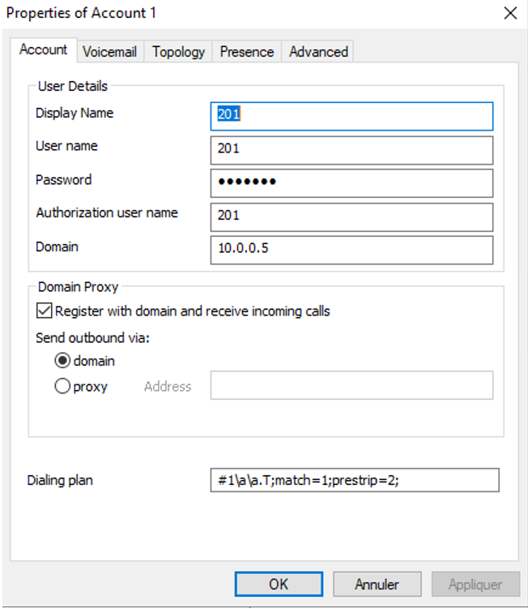Pour finir, nous avons tapé le numéro 201 sur le téléphone 200 et nous nous sommes appelées.
Téléphones portables
De plus, on a installé une application sur nos téléphones qui se nomme «PortSIP UC».
Pour cela nous devions commencé par connecter nos téléphones au point d'accès wifi de notre réseau.
Dans cette applications, nous avons entrées notre numéro SIP, le mot de passe ainsi que le numéro de domain (adresse IP du PC serveur).
Grâce à cette application, nous avons pu nous appelées entre nous avec nos téléphones portable. (nous avons rajouté quatre utilisateurs sur le serveurs asterisk).
Configuration du point d'accès WiFi
Afin de configurer l’ap Wifi, il faut qu’il soit en liaison directe avec un pc. Pour cela nous allons faire en sorte que le pc et l’AP puisse communiquer entre eux. Il faut les mettre tous les deux dans le même réseau, sachant que ce dernier à une Ip de base en ‘192.168.0.50’ il faut mettre le pc de configuration dans le même réseau que l’AP. Nous allons donc attribuer une IP au pc de configuration qui sera ‘192.168.0.5’.
A présent que le PC de configuration et que l’AP sont dans le même réseau IP (et même vlan) on entre l’ip de l’AP dans un navigateur Web pour accéder à l’interface de configuration :
http://192.168.0.50
Nous arrivons sur la page suivante :
Il n’y a pas de mot de passe par défaut donc on va juste appuyer sur entrer.
On arrive sur ce menu :
On va démarrer la configuration : ‘lauch Wireless Setup Wizard’ :
Notre Dlink nous servira de point d’accès wifi nous allons donc selectionner le mode “Access Point” :
Nous allons Lui donner un nom “AP_KBO” et un mot de passe pour lorsque qu’un utilisateur souhaite se connecter : “Wifi2004” :
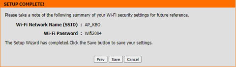A présent nous pouvons configurer la partie “Réseau” de notre AP, pour cela nous nous plaçons dans “LAN SETUP” :
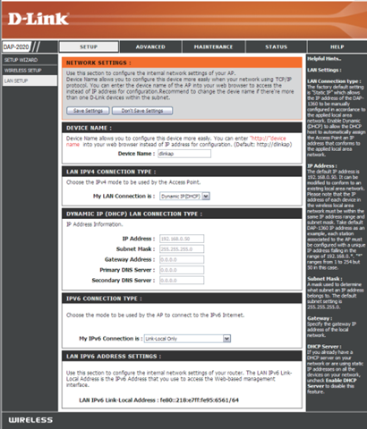Dans un premier nous donnons un nom à notre appareil “dlinkapAL” pour pouvoir acceder à l’interface de configuration plus facilement :
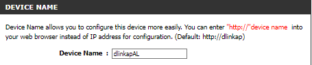Nous allons mettre pour le moment une IP statique à notre AP, cette dernière sera : “192.168.2.5” Le masque sera en /24, sa passerelle sera en “192.168.2.1” et DNS sera l’adresse de la passerelle de l’Iut :
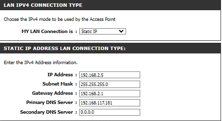Pour que les utilisateurs de l’AP n’aient pas à entrer manuellement l'IP dans l’interface de configuration IP de leurs appareils, nous allons configurer une attribution DHCP.
Nous allons choisir une plage de 40 adresses et la passerelle ainsi que le DNS seront les même que ce qu’on a configurer précédemment.
Le bail choisis sera un bail d’une semaine :
On observe sur l’interface de configuration de l’AP que les utilisateurs sont bien connectés à l’AP :
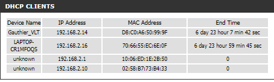
PARTIE 2 : VERIFICATION CONFIGURATION ROUTEUR
A présent nous vérifions bien sur le routeur que le NAT est configuré pour que ce dernier opuisse transmettre internet, ici, la sous interface Gigabit-ethernet 0/0/0/.300 :
On observe que l’encapsulation à bien été fait, que l’adresse Ip mise (passerelle) est bien configurer. Le réseau de l’ap utilise bien le PAT pour accèder à l’extérieur :
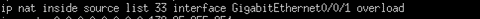On peut observer ici les adresses du réseau 192.168.2.0 utilise la translation d’addresses :
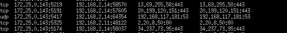Enfin, nos appareils peuvent se connecter en Wifi à l’appareil et naviguer sur internet.